CELLO История · с. 14–17
История виолончельного искусства
Фидель, смычковые лиры и виолы: откуда пришла виолончель
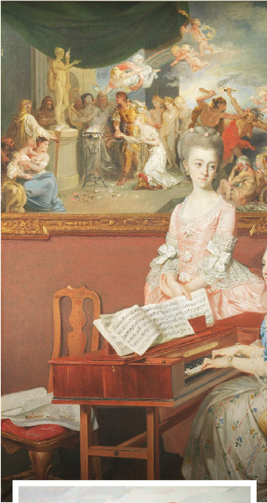
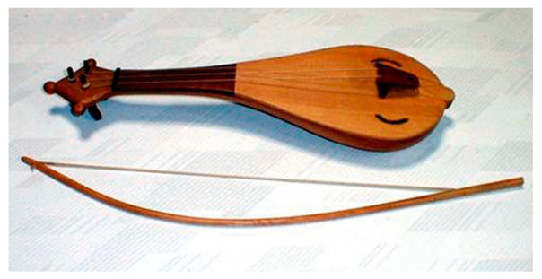
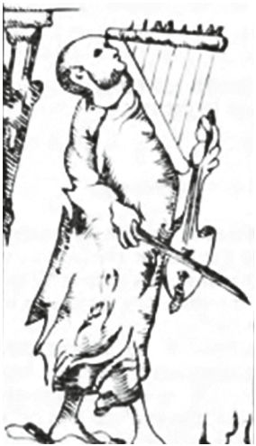
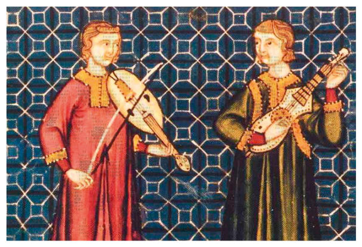
Виолончель – это не просто струнный смычковый музыкальный инструмент. С её помощью талантливый исполнитель способен создать целую вселенную звуков. Охватывая практически весь звуковысотный диапазон, свойственный человеческому голосу, она позволяет передать богатейшую гамму эмоций – от нежнейшей лирики до бушующей страсти. Её звукоизобразительные возможности поистине безграничны: не говоря о подражании любым струнным инструментам, виолончель способна имитировать флейту, кларнет, фагот… и даже ударные инструменты!
История виолончельного искусства подобна увлекательному путешествию по странам и эпохам. Эта эволюция наполнена смелыми экспериментами и удивительными трансформациями, искусным мастерством и большой любовью к музыке. Её корни уходят в глубокую древность, когда человек впервые стал вслушиваться в звучание тетивы лука. Даже округлые формы дек струнных инструментов близки форме лука, который делали из рогов животных. Во многих развитых культурах европейских и азиатских народов появлялись струнные смычковые инструменты, поэтому не имеет смысла искать место их «изобретения». Первые дошедшие до нас литературные и иконографические, а также материальные свидетельства бытования такого рода инструментов в Европе относятся к IX–X столетию и называются чаще всего фидель (или виела).
Самое раннее из сохранившихся изображений подобного инструмента находится в Утрехтском псалтыре (ок. 860 г.). Такая разновидность бытовала в музыкальной практике вплоть до XII века. А примерно с Х века появляется и другая разновидность фиделя с грушеподобным корпусом. Он получил впоследствии большое распространение, в том числе под названием смычковой лиры. К XI–XII векам фидель претерпевает изменения, принимая гитарообразную форму. По-видимому, такой тип инструмента широко использовался немецкими миннезингерами и французскими жонглёрами.
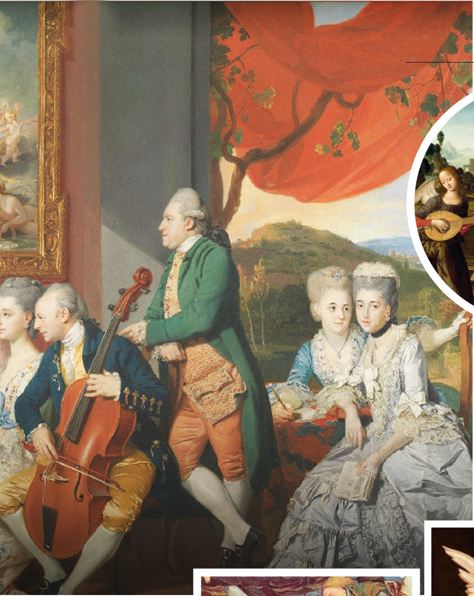
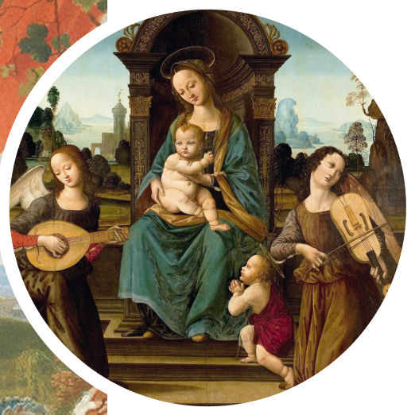
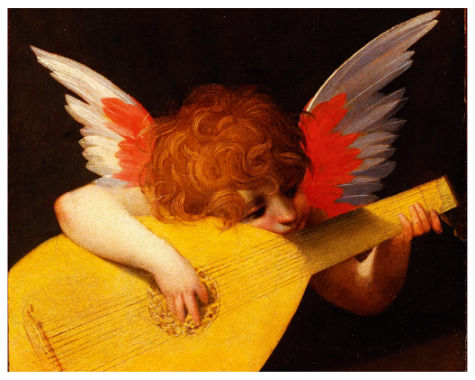
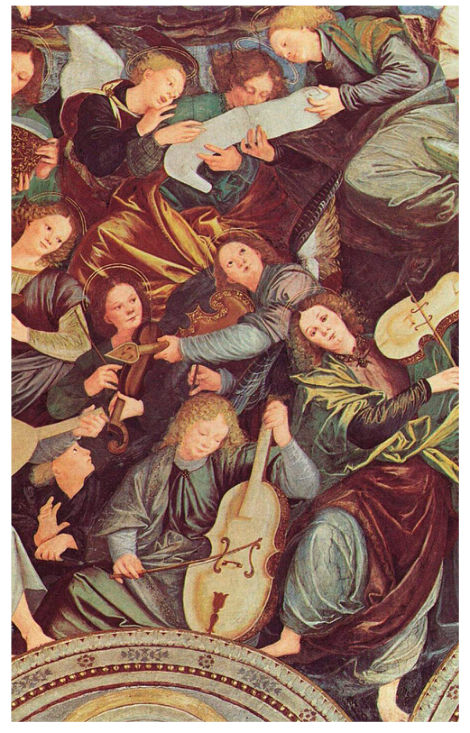
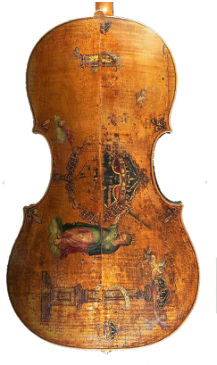
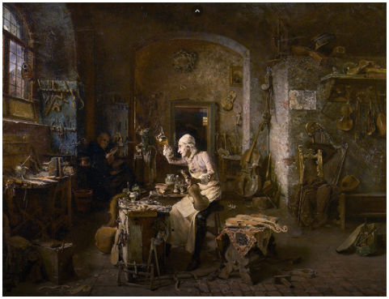
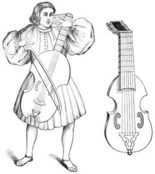
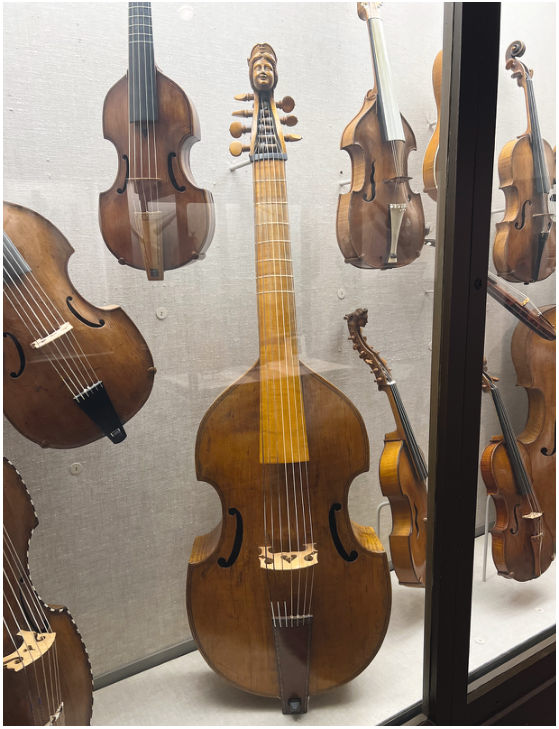
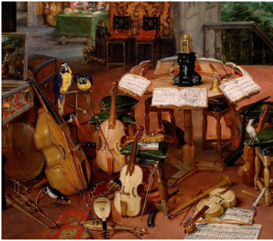
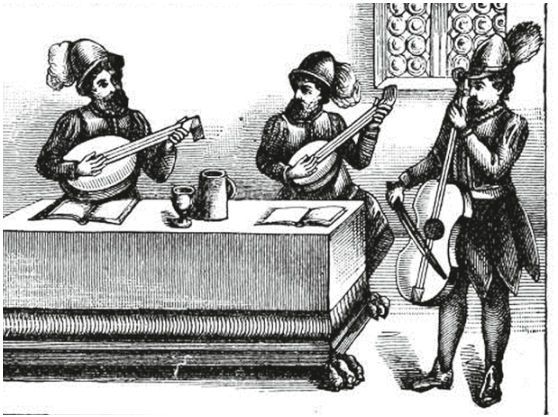
В XIV–XV столетиях он появляется на многих изображениях, в частности на картине Лоренцо ди Креди (ок. 1459–1537) «Мадонна с Младенцем, Иоанном Крестителем и двумя музицирующими ангелами». Обычно у такой разновидности фиделя было пять струн, которые чаще всего выстраивались по кварто-квинтовому строю, причем крайняя нижняя струна могла находиться вне грифа (бурдон). Как же использовались эти инструменты? Очень часто их изображали в скульптурных композициях церквей и соборов, на картинах с духовной тематикой, что позволяет предположить их применение в культовой музыке.
Однако фидель (или виела) занял прочное место и в музыкальной культуре бродячих музыкантов, где применялся не только как сопровождение песен менестрелей и трубадуров, но и в качестве довольно виртуозного инструмента для исполнения большого количества танцевальных мелодий. С XIII–XIV веков встречались инструментальные ансамбли, состоявшие из фиделей. В трактате Иеронима Моравского (вторая половина XIII века) уже излагается техника игры на виеле; в частности, он пишет, что исполняемая мелодия могла орнаментироваться и украшаться трелями.
Позднее началось разделение фиделеобразных инструментов на две ярко выраженные линии. Одна из них, связанная с деятельностью народных музыкантов – фидлеров, которые «водили лошадиным хвостом по овечьим жилам» (как пренебрежительно отзывались о них в аристократических кругах позднего средневековья), – привела к образованию семейства смычковых лир. А вторая, бытовавшая в придворно-замковом исполнительстве и испытавшая влияние лютни, привела к образованию семейства виол («детищу благородного, достойного человека») .
Смычковые лиры отличались безладовым грифом, имели пять струн на грифе и ещё две бурдонные, квинтовый строй. В процессе трансформации они постепенно приблизились к скрипке, это касалось формы дек и резонансных отверстий. Семейство состояло из лиры да браччо (сопрано), лироне да браччо (альт), лиры да гамба (тенор) и лироне перфетто (бас).
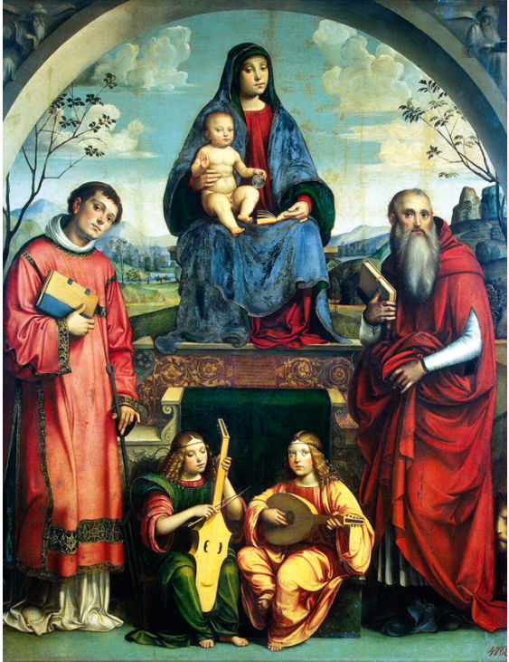
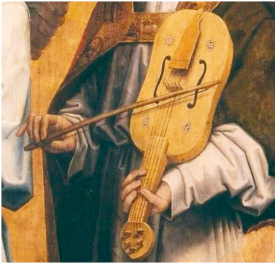
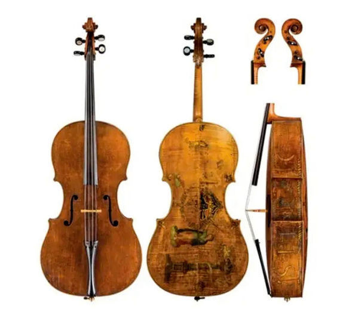
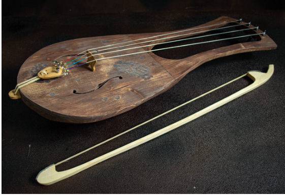
Виольное семейство имело корпус с ярко выраженной «талией» и тупыми углами, плоскую заднюю деку, резонансные отверстия в виде скобок и дополнительное в виде розетки, покатые «плечи» и гриф с ладами, чаще всего шесть струн и квартотерцовый строй. Виолы тоже были разных размеров: от самой крошечной (размером со скрипку) до самой большой, басовой (размером почти с контрабас).
Довольно распространен был и своеобразный промежуточный инструмент, который можно назвать фидель-виолой. Образец такого рода изображен на картине «Мадонна с Младенцем, Святыми Лаврентием и Иеронимом» известного итальянского живописца Франческо Франча, которая находится в Эрмитаже.
В музыкальной практике XVI века фидель-виолы были широко распространены и часто объединялись в ансамбль с виолами и лютнями. Инструментами подобных разновидностей владели известнейшие итальянские художники: Паоло Веронезе и Тинторетто были виолистами, а Леонардо да Винчи играл и на виоле, и на лютне. В одном из английских исторических документов того времени подчёркивается, что «каждый дворянин в Англии должен был уметь петь мелодию и с тем же искусством играть её на виоле или лютне».
Безусловно, большое значение для ассимиляции инструментов имел тот факт, что все они изготавливались одними и теми же, как правило итальянскими, мастерами (их называли лютьерами, то есть теми, кто делает лютни) и постепенно приобретали тот облик инструментов скрипичного семейства, который сохранился до сих пор.